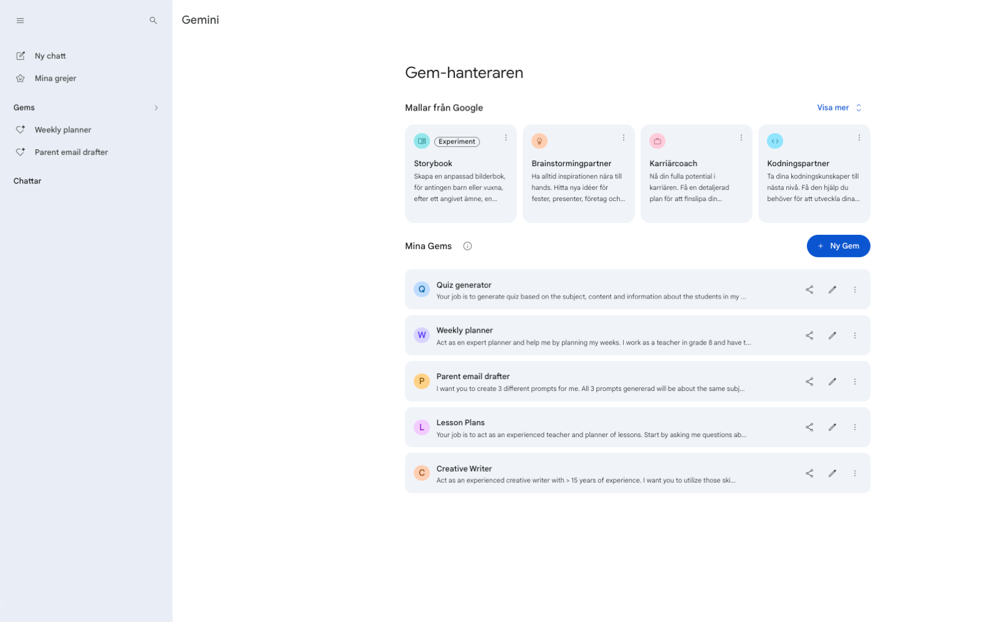
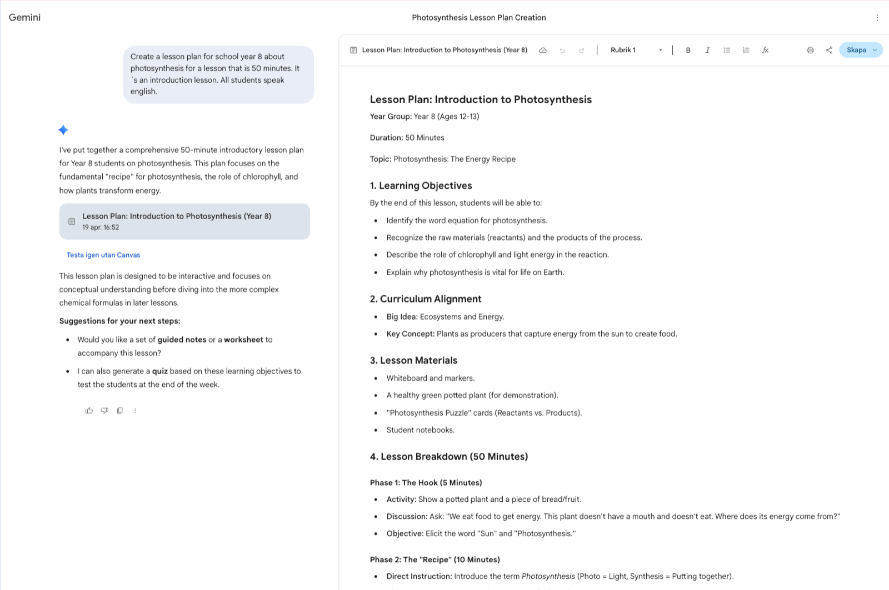
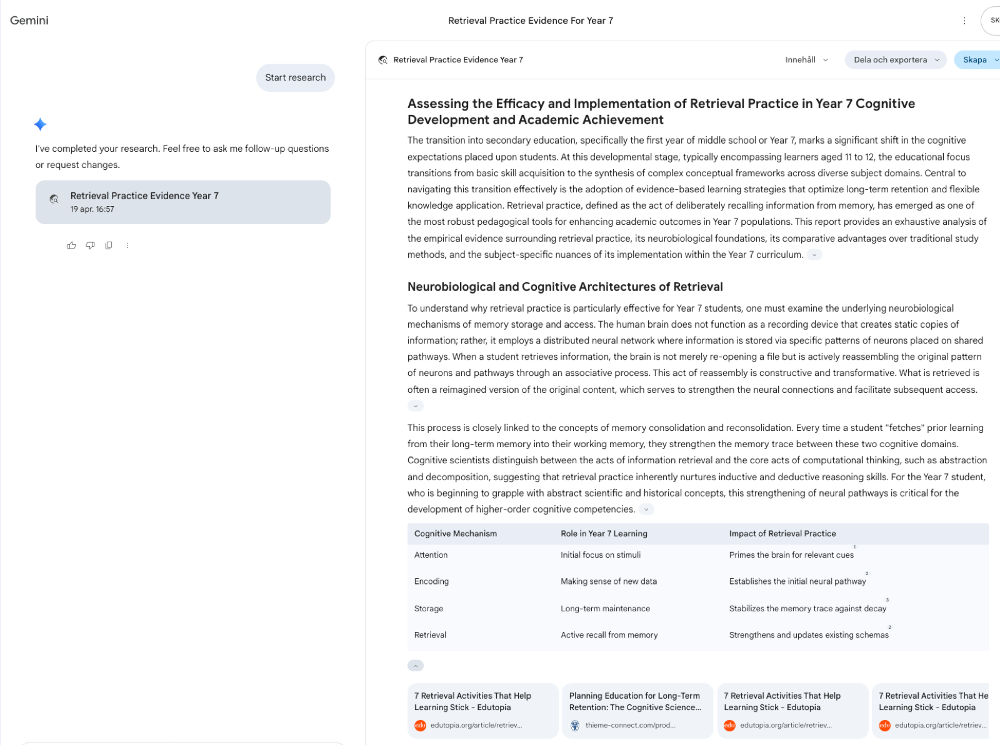
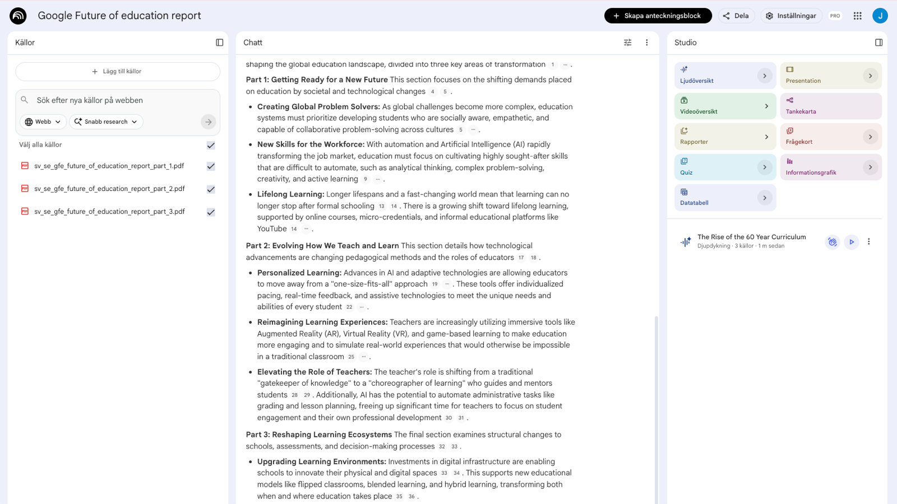

Gemini & NotebookLM for teachers and school leaders
A practical handbook for using Google's research and generative AI in the classroom — from your first prompt to a school-wide strategy.
Download the free PDF →Three principles that shape this guide
Before the how, a word on the why. Anyone can list Gemini's features, and anyone can recite the NotebookLM marketing copy. Few guides take a position on what these tools are actually for in a school — and, just as importantly, what they are not for. This one does. Three principles sit behind every recommendation in the pages that follow, and they are worth reading before you open a single prompt box.
The teacher is the expert
Gemini and NotebookLM are tools. You are the teacher. The tools do not set the learning goals. They do not know your students. They have not read the curriculum you are working under, nor do they understand the pedagogical choices you have made and why. You do. Every output either tool produces passes through your professional judgment before it reaches a classroom. That is not a polite idea — it is the working rule of this guide.
Your knowledge, your experience, your discernment: these are what make any AI output actually useful. If you understand differentiation deeply, these tools become a genuine force multiplier. If you don't, no model will fill the gap. The tool amplifies what you already bring; it does not replace it.
Do the fundamentals better
The temptation with new technology is always to reach for the new: escape rooms, immersive worlds, gamified everything. Most of it is noise. The real opportunity with Gemini and NotebookLM is quieter, and more consequential. It is to do the evidence-based fundamentals more often and more consistently than you currently can.
Retrieval practice. Vocabulary work. Text differentiation. Sentence stems. Worked examples. Formative feedback. These are the practices the research keeps pointing to, and the practices teachers have always said they would use more often if they had the time. These tools give you the time. What used to take ninety minutes of lesson preparation now takes five. That is not flashy. It is transformative in the only sense that matters: students learn more.
After 28 years in classrooms and leadership roles, I have watched a lot of AI tools arrive with the promise of changing education. The ones that stayed were the ones that let teachers do more of what they already knew worked. The ones that vanished were the ones that asked teachers to become something else. Gemini and NotebookLM — used well — belong clearly in the first group. Used badly, they don't.
— JLInclude every student
Every classroom has students on the margins. The EAL student who needs key vocabulary pre-taught before she can access the text everyone else is reading. The student with a learning difference who needs the same content at a simplified reading age. The advanced student who is coasting because the work is not stretching her. Meeting all of these students, every lesson, has always been the right thing to do — and has always been too time-consuming to do consistently.
Gemini and NotebookLM lower that cost to the point where meeting them becomes realistic. Differentiated texts in five minutes. Translated key terms for a newly arrived student. Scaffolded instructions for a worked example. Audio versions of a written task, recorded by the tool itself. This is not about doing more. It is about doing what matters, for the students who need it most, at a cadence the research has recommended for decades.
One more thing worth naming before we begin. Under Article 4 of the EU AI Act — which has applied since 2 February 2025 — every organisation that deploys AI, schools included, must ensure its staff have sufficient AI literacy to use these tools responsibly. The guide you are reading is itself a form of that work. Part 4 and the EU bonus chapter return to this obligation in detail; for now, know that your teacher development and your time spent reading this guide IS your school's Article 4 work.
Gemini and NotebookLM can help you create resources faster. They cannot replace the relational work of teaching. Do not let the efficiency of AI trick you into spending less time with students. The time AI saves is for them — not for more admin.
Understanding Gemini and NotebookLM
Gemini and NotebookLM are best understood as two complementary views onto a single Google account. Gemini generates from open knowledge — the whole of the web, Google's search index, and the model's own training. NotebookLM synthesises from a set of sources that you have chosen and uploaded yourself. Since 8 April 2026 the two sync bidirectionally: a Notebook built in one tool now appears in the other, with the same sources and the same chat history behind it.
Two views, one Google account. Gemini generates from open knowledge; NotebookLM synthesises from your sources. Since April 2026 the two sync bidirectionally.
Gemini — your generative assistant
Gemini is the conversational interface — where you draft, differentiate, research, and ideate. It lives in the Gemini app on Mac, iOS, and Android, at gemini.google.com in a browser, and as a sidebar inside Google Docs, Sheets, Slides, Gmail, Forms, and Vids when your school has the Education Plus or Teaching & Learning add-on. The current flagship model is Gemini 3 Pro, launched 18 November 2025, with a one-million-token context window and strong multimodal reasoning.
Inside Gemini you also get Canvas (an interactive workspace for documents, code, and interactive artefacts), Deep Research (a multi-step research agent that plans, searches, and produces cited reports), Gemini Live (a real-time voice mode), and image generation powered by Nano Banana 2. Part 2 walks through each of these in classroom terms and shows when to reach for which.
NotebookLM — your grounded research companion
NotebookLM is the mirror image of Gemini. It answers only from sources you upload to it — nothing else. Supported source types are PDFs, Google Docs, Google Slides, websites (by URL), YouTube videos, and copy-pasted text. Matt Miller of Ditch That Textbook (January 2026) captures it well: NotebookLM is "a personal tutor that only knows what you teach". That single constraint is what makes the tool trustworthy for classroom use.
Its Studio features turn those uploaded sources into briefings, mind maps, flashcards, quizzes, study guides, Audio Overviews (podcast-style conversations between two AI hosts) and Video Overviews — each one synthesised from your material with citations rather than hallucinated from general knowledge. Part 2 covers how each Studio output earns its place in a teacher's week.
How they now connect
Since 8 April 2026 the two tools sync bidirectionally. A Notebooks section has appeared in the Gemini side panel, sitting between "My stuff" and "Gems", and anything you create in one surface is visible and editable in the other. The workflow this unlocks is genuinely new. A student can upload her class notes in Gemini, generate a cinematic Video Overview of them in NotebookLM, then return to Gemini to draft an essay outline against the same sources — without re-uploading anything.
The two sides remain complementary rather than identical. NotebookLM gives you Video Overviews and infographics that Gemini does not offer. Gemini gives you web-search alongside your uploaded sources, which NotebookLM refuses on principle. The integration is rolling out first to Google AI Ultra, Pro, and Plus subscribers; the free tier follows in the weeks after.
What you can access
What you actually see depends on your account type. A personal Google account gets you consumer Gemini and NotebookLM at the free tier, with paid AI Plus, AI Pro, and AI Ultra tiers above it. Schools running Google Workspace for Education are on a different path. Core Gemini AI in Classroom — lesson planning, quiz generation, rubric drafting, and similar — is free for all Workspace for Education accounts (confirmed at BETT 2026). Premium Gemini-in-Workspace features inside Docs, Slides, Forms, and Vids require the Education Plus or Teaching & Learning add-on and are restricted to users 18 and over. Part 4 covers the admin and school-leader angle in detail. Exact usage limits are not quoted here because Google updates them monthly — refer to Google's current documentation for the live numbers.
Age-gates matter, especially in primary and lower-secondary schools. Gemini Live is 18+ only, and the premium Gemini-in-Workspace features inside Docs, Slides, Forms, and Vids are 18+ only. NotebookLM is available to users 13+ in a browser, with stricter content policies for users under 18. Hands-on student use below 18 is therefore constrained — and in several EU member states, national guidance goes further still (some require head-teacher approval, or prohibit independent student use of generative AI during instruction). The teacher-as-primary-user framing in this guide reflects those constraints. Verify your own country's current rules before you deploy any feature described in this guide — AI in education is evolving quickly and national rules differ significantly. For privacy: inside Workspace for Education the data-protection defaults are stricter than consumer Gemini, but verify the current state in your Google Workspace Admin console and DPA before implementation.
Getting Started
If you have never opened Gemini or NotebookLM, start here. By the end of this part you will have accounts for both, you will know the prompt anatomy that actually works, and you will have five concrete things to try this week.
Your Google account
Sign in at gemini.google.com and notebooklm.google.com with your Google account. The same account works for both — no separate sign-up, no extra password to forget. A personal Google account is perfectly fine for your early exploration. What it is not fine for is sensitive data: student names, grades, behaviour records, health information, SEN plans, safeguarding notes. None of that belongs in a consumer account. Part 4 and the EU bonus chapter explain the reasons properly; for now, treat the line as absolute.
If your school runs Google Workspace for Education, the access path is different. Core Gemini AI inside Google Classroom — lesson planning, quiz generation, rubric drafting — is free to every Workspace for Education account (confirmed at BETT 2026). The premium Gemini-in-Workspace features inside Docs, Slides, Forms, and Vids require either the Education Plus or the Teaching & Learning add-on and are restricted to users 18 and over. NotebookLM is free for Workspace for Education accounts too, and Education Plus / Teaching & Learning customers now get the expanded Plus-tier limits at no additional cost. Part 4 covers the admin angle in full.
A practical note for most teachers: for most of this guide, a free account is enough. Upgrade only when you hit a real limit mid-task — not before. Google changes features and limits monthly; for current limits and availability, check Google Workspace Admin and your Data Processing Agreement before implementation.
Your first Gemini prompt — the RTF anatomy
Most prompts fail not because the model is weak, but because the prompt is vague. A useful prompt names three things: Role, Task, Format. Three letters: R, T, F.
R — Role
Tell Gemini who to be. Specific beats generic, every time. "A primary teacher" is weaker than "an experienced Year 4 literacy teacher in a state primary school with a wide range of reading ages in the class". Why this matters: grounding the role makes every downstream choice better — vocabulary complexity, cultural references, examples, assumed prior knowledge. Gemini cannot read your mind, but it can adopt a stance if you describe one carefully. A sentence on the role is the single cheapest upgrade you can make to any prompt.
T — Task
State exactly what you want done. Not "help me with a quiz" — that leaves too much to guess. Instead: "Create a ten-minute retrieval-practice quiz on the persuasive techniques covered in the past three lessons." Pack three things into the task sentence: a time frame, a scope boundary (which lessons, which topic, which year level), and the learning intention. The more the task sentence resembles a line you would write to a colleague covering your class, the better it performs.
F — Format
Specify the shape of the answer. Number of questions, mix of question types, word count, heading structure, whether you want an answer key at the end, whether you want it as a table or as prose. Format is where most first drafts go wrong and where most fixes get made — so say it up front. If you cannot picture the output in your head, Gemini cannot either.
Put the three together and you have a prompt that works on the first try and gets better on the second. Iteration is part of the skill: Gemini's first output is a draft, not a deliverable. Read it, tell Gemini what to change, and run again.
Open Gemini. Write one prompt using RTF — Role, Task, Format — for a real task on your desk this week. When the first draft arrives, ask for two changes and run it again. Then ask for one more. Notice what changes between draft one and draft three. That is your skill curve in action.
Bad → Better → Best
Same topic, three drafts of the same prompt. Each draft gets more precise about what Gemini needs to know. Output quality climbs with the specificity of the prompt — not with the length of it.
Explain the water cycle.
Explain the water cycle for Year 6 students. Make it easy to understand.
Act as an experienced Year 6 Science teacher. Task: Write a one-page explanation of the water cycle suitable for a mixed-ability Year 6 class. Include the four core stages and one real-world example for each. Format: - 250–300 words total - Plain language, short sentences (≤15 words where possible) - One vocabulary box with five key terms and child-friendly definitions - End with three retrieval questions (two recall, one application) Pitch: students reading at Year 5 to Year 7 level.
The Best prompt is not longer for its own sake. Every word earns a place by reducing what Gemini has to guess.
Source-first thinking — how NotebookLM is different
NotebookLM flips Gemini's approach on its head. Instead of starting with your intent and asking Gemini to generate from its general knowledge of the world, you start with sources — documents, links, videos, notes you have chosen yourself — and ask NotebookLM to synthesise from them. Three things fall out of that one design choice, and each one matters for a classroom.
First, citations. Every answer NotebookLM produces points back to the exact source passage it came from — click the citation, land on the line. Second, hallucination control. Because NotebookLM answers only from what you have uploaded, it cannot invent facts from elsewhere; the worst it can do is misread your own material, which you can immediately check against the source. Third, and most important for a teacher: your curriculum, not "a curriculum". Working on your own documents means the answers reflect your school's actual materials, assessment style, and language — not a generic version pulled from wherever the training data landed.
A practical example. Upload your civics curriculum, two of your lesson plans, and the assessment rubric you use for the unit. Ask: "What learning progressions are implied across these documents, and where do my assessment criteria misalign with the unit plan?" You get a grounded, citable answer in two minutes — the kind of analysis that would have taken an afternoon by hand.
Matt Miller (Ditch That Textbook, January 2026) puts it neatly: NotebookLM is "a personal tutor that only knows what you teach". Most of what teachers actually need sits between the two tools — Gemini for generation, NotebookLM for grounding — and since April 2026 both are accessible from the same interface.
Five quick wins for this week
Don't try to use Gemini and NotebookLM for everything at once. Get good at one task, get it into your routine, then add the next.
1 · Differentiate a reading passage at three levels (Gemini)
Paste a passage you are planning to use. Ask Gemini to produce three versions of it at reading ages two years below, at-level, and two years above, preserving the core ideas and keeping the shared key vocabulary intact. The whole job takes five minutes instead of forty, and every student in your room reads about the same subject on the same day.
Extra example: a Year 7 geography teacher I work with uses this every week on newspaper articles about current events. One article becomes three versions for three reading groups within fifteen minutes, and current affairs finally enter the classroom on time rather than a term late.
2 · Generate a podcast from your unit plan (NotebookLM Audio Overview)
Upload three to five unit documents — your unit plan, a couple of key readings, your rubric. In NotebookLM, click "Audio Overview". You get back a 15–25 minute podcast-style discussion of the material by two AI hosts. Why teachers care: it's excellent for EAL students (they can listen before reading); excellent for commute-time review of unit content; excellent as a catch-up resource for absent students. The interactive mode (currently in beta) lets learners break in and ask the hosts questions mid-podcast.
Extra example: two SO-teachers at Fristadsskolan in Eskilstuna — Viktor Säfström and David Folkebrant — published their workflow on Pedagog Eskilstuna in early 2026. They produce short 1–2 minute audio clips per concept, regenerate them in Arabic and Amharic for newly-arrived students on request, and share them through Google Classroom.
3 · Research a topic with cited sources (Gemini Deep Research)
Open Gemini and choose Deep Research. Ask your question; Gemini proposes a research plan (the sources it will look at, the sub-questions it will answer); you approve; it works for 5–15 minutes; you receive a structured, multi-page report with inline citations, delivered as a Canvas artefact or an audio summary. Why teachers care: background reading for a new unit in fifteen minutes instead of an afternoon; comparative analysis across three educational frameworks or five countries' curricula in a single pass; staff-development briefings ready before the meeting. Watch out: citations must be verified — AI can still mis-attribute.
4 · Summarise a long policy document as a mind map (NotebookLM)
Upload the PDF. Click "Mind Map". NotebookLM analyses the document and produces a visual, structured map of the key concepts and how they relate, with citations back to the source. Share it with your team. Why teachers care: policy documents are long and few people actually read them properly; a mind map with source citations is a faster way to align your department on what the document actually says.
Extra example: when your national education authority or school district issues an updated assessment policy, upload both the new and the previous version. Ask for a side-by-side of what has changed. You now have a comparison your colleagues do not.
5 · Draft a parent email in three tones (Gemini)
You know what you want to say. Writing it well, professionally, and without falling into the six awkward sentences you have used before is what takes time. Give Gemini the context — what happened, what you want the parent to know, what tone you want to strike — and ask for three versions (firmer, warmer, neutral). The three versions give you calibration before you commit to the one you will send. Edit. Send.
Pick one of the five. Do it for a real lesson this week. The other four will still be there next week. Mastery happens through repetition on one task, not scatter across all five at once.
Part 1 — Before you move on
- I have signed in to Gemini and NotebookLM with my Google account
- I understand the difference between Gemini (generative) and NotebookLM (source-grounded)
- I have written at least three prompts using the RTF anatomy — Role, Task, Format
- I have iterated on at least one prompt — improving it through two rounds of feedback — for a real task
- I have completed at least one of the five quick wins for a lesson or task this week
- I have decided which categories of data are acceptable to share with Gemini or NotebookLM, and which are not
Working Smarter
Once you find yourself returning to Gemini or NotebookLM for the same kind of task week after week, it is time to stop starting from scratch. This part shows you how to turn these tools into persistent assistants — how to set up Gems, use the Studio features, and make Canvas, Deep Research, and Audio Overviews part of a weekly rhythm that already knows your subject, your school, and how you like to write.
Gemini Gems — your persistent custom agents
A Gem is a named instruction set with optional attached files. You build one — give it a name, write instructions, optionally upload two or three reference documents — and from then on every time you trigger that Gem, Gemini loads the context before you have typed a word. This is where Gemini stops being generically helpful and starts being genuinely yours. Gems are shareable too: you can pass a Gem to a colleague through a link, or inside Google Classroom as part of the Gemini-in-Classroom rollout.

What to upload to your first Gem
Pick the subject or year level where you spend most of your planning time. Create a Gem for it. Upload five things that together describe your working context:
- Your curriculum or syllabus for that subject and year
- Your scope and sequence or term planner, if you have one
- Your school's style guide or communications guide, if one exists
- An assessment rubric you use regularly
- Three de-identified student work samples at different performance levels
The instructions that make the difference
Under the Gem's settings, write a short instruction set that describes who the Gem is for you. Narrow the scope; name the register; state the hard rules. Something like:
"You are an experienced Year 8 English teacher in a mixed-ability state school. Outputs should be classroom-ready, follow the uploaded style guide, and never produce more than I asked for. If a task involves student data, ask me to confirm the data has been de-identified before proceeding. Use British English spelling."
A word on reliability. Gems do not always stick rigidly to their knowledge base — if your instructions are vague, the Gem drifts. A narrow scope and a clear purpose are the antidote. Alice Keeler, writing about why she loves the concept of Gems, frames it plainly: a generic AI tool cannot understand the nuances of your classroom or the principles of effective pedagogy. A Gem is the antidote to "generic AI that understands nothing about your classroom" — but only if you actually tell it what the nuances are.
A practical rule: if you find yourself explaining the same pattern to Gemini more than three times, it is time to make it a Gem. The three-repetitions rule is a remarkably reliable signal. Meeting brief for the same department every fortnight? Gem. Differentiated reading passage at three levels for your current unit? Gem. Parent-communication draft in your school's voice? Gem.
You do not have to build every Gem from scratch. Eric Curts, a long-time Google Certified Trainer, maintains edugems.ai — a free library of roughly 200 ready-to-use Gems for educators, growing by around eighteen a month. Use them as templates; rewrite to match your own classroom context before you trust them in production. And inside Classroom specifically, Google now ships four template Gems — Study partner, Quiz me, Brainstorm partner, Real-world connector — which are worth looking at even if you end up replacing them with your own.
De-identify everything before it goes into a Gem's knowledge base. Student names, grades, behaviour records, health information, SEN plans, safeguarding notes, parent contact details — never. Replace names with roles ("Student A", "Student B"). Generalise dates and locations. The moment a file leaves your desktop and lands in a shared Gem context, you have lost granular control of who sees it. If you are unsure whether a document is safe to upload, treat it as if it is not, and ask your school's data protection officer before you proceed.
Spend twenty minutes setting up one Gem for your most-used task. Upload three documents. Write the instructions. Then run yesterday's worst prompt inside the Gem and notice the difference. That twenty minutes is the highest-leverage time you will spend on AI all year.
Canvas — the interactive workspace
Canvas is a side-by-side workspace inside Gemini. While a chat runs on the left, Canvas holds a document, a piece of code, or an interactive artefact on the right — editable in place. You can change a paragraph inline, ask Gemini to rewrite a single section, regenerate one quiz question without losing the rest of the quiz, or restyle a table without touching the prose around it. The effect is that Gemini moves from throwaway-chat mode to co-editor mode. Drafts stop being disposable.
For a teacher this unlocks several patterns that pure chat struggles with. You can build a worksheet collaboratively — Gemini drafts the questions, you edit the wording you would never have used, ask for two harder extension questions at the end, regenerate just question four when it lands badly. You can hold a full lesson plan in Canvas with a scope table, learning objectives, differentiated questions at three levels, and an exit ticket, all visible at once and all editable without starting over. You can take a Deep Research report (more on those below) and ask Canvas to transform it into something classroom-ready: an infographic, an interactive quiz, a one-page student handout, a webpage, even a small game students can play. You can generate a customised quiz from a source document and iterate on it in the same surface without ever leaving the chat.

Deep Research — multi-step research with citations
Deep Research is a multi-step agent. It plans your research, searches the web (and, optionally, your Gmail, Drive, and Chat if you give it permission), reasons across what it finds, and writes a structured report with inline citations. It runs on the Gemini 3 Pro backbone with a one-million-token context window, which is why it can hold several long sources in mind at once and cross-reference them. The moment you ask your question, Gemini proposes a research plan — the sub-questions it will answer and the kinds of sources it will look at — and hands it to you for approval before it runs. The finished report arrives as a Canvas artefact or, if you prefer, an audio summary.
For a teacher this collapses research time from hours to minutes. Background reading for a new unit that used to eat an afternoon now takes fifteen minutes of compute while you are teaching. Comparative analysis — three educational frameworks side by side, or five countries' curricula on the same topic — comes back in a single pass with citations you can actually follow. Staff-development briefings can be delivered as an audio summary the head of department listens to on the commute; Kasey Bell describes this well as "a podcast for your commute", and it is a fair description of the experience.
One discipline is non-negotiable. Citations must be verified. The report looks authoritative, the inline footnotes look clean, but AI can still mis-attribute — a claim cited to a source that does not quite say that thing, a figure lifted from an older edition, a quote reassigned to the wrong author. Click through before you quote. Every footnote deserves a glance, and the ones you will quote aloud deserve a read.

Gemini Live — voice for on-the-go work
Gemini Live is the voice conversation mode. You talk; Gemini listens and replies in a natural-sounding voice. Camera share is supported (point your phone at a diagram, a textbook page, an object on your desk, and ask about it); screen share is supported (walk Gemini through what you are looking at on the device itself). It integrates with Google Maps, Calendar, Tasks, and Keep. Two hard constraints matter: it is mobile-only, and it is age-gated to users 18 and over.
For a teacher the right framing is "thinking aloud with a colleague who is actually listening". Dictate a draft parent email while walking between classrooms and arrive at your desk with a first version already written. Brainstorm a unit concept on the commute and have the outline waiting when you open your laptop. Rehearse a difficult parent conversation by role-playing — Gemini plays the parent, pushes back in character, and you practise your responses without burning a real meeting. What Gemini Live is not: a classroom note-taker with students present. That belongs to purpose-built classroom tools with the appropriate data-protection treatment. The mobile-only and 18+ constraints are a feature here, not a bug — they define this as a teacher tool, not a student-facing one.
Nano Banana 2 — image generation inside Gemini
Nano Banana 2 is Google's image model inside Gemini. Released 26 February 2026 (also known as Gemini 3.1 Flash Image), it replaces Nano Banana Pro as the default image generator in the Gemini app. Capabilities worth knowing: web-grounded rendering of specific subjects, genuinely precise text rendering (which makes it good for posters, headings, and translation tasks — the places where earlier image models produced gibberish), subject consistency across up to five subjects or fourteen objects in the same scene, and output resolutions from 512 pixels up to 4K.
For teachers the classroom uses are quietly practical. Diagrams for concepts students struggle with — water cycle variants, circulatory system close-ups, historical map overlays, abstract mathematical relationships visualised. Illustrations for reading passages where stock imagery simply does not exist — a Viking longhouse interior, an industrial-era workshop, a scene from a text your class is studying that has never been illustrated. Cover images for Google Slides decks, so the deck announces the lesson before a word is spoken. Visual examples for art and design prompts, generated fast enough to iterate during the lesson.
Style controls matter more than most teachers realise. "In the style of a vintage children's book", "a clean line drawing in ink", "a technical engineering diagram", "a watercolour illustration in muted tones" — the style tag is where a generic image turns into a classroom-ready one. Johan's 140 NotebookLM styles are about text styles (see the Styles Library further down this guide); Nano Banana 2 is the visual equivalent, and the two combine well when you are building a polished handout or slide deck.
Do not generate images of specific real people, and especially not of students. General and anonymous only. Representations of individual pupils — even well-intentioned ones — cross a line that no style tag fixes.
NotebookLM Studio — turn sources into artefacts
NotebookLM's Studio is the set of one-click tools that transform your uploaded sources into different artefact formats. The notebook stays the same; the output changes. Five of them deserve attention, because each one turns the same material into a different kind of classroom-ready resource — and most teachers I work with use only one of them before discovering the others.
Audio Overviews
A podcast-style dialogue between two AI hosts summarising your sources. Four formats are now available — the default Deep Dive, plus Brief, Critique, and Debate (added September 2025). An interactive mode (still in beta) lets learners break in mid-podcast and ask the hosts questions in real time. Excellent for EAL students who listen before reading, for absent-student catch-up, and for your own commute review of a unit you are about to teach. Output in languages beyond English — including Swedish and other EU languages — works well as of April 2026, though quality varies by language; generate a test clip before relying on it for a whole unit. The anchor example worth knowing: Viktor Säfström and David Folkebrant, two social-studies teachers at Fristadsskolan in Eskilstuna, Sweden, generate 1–2 minute audio clips per concept, regenerate them in Arabic and Amharic for newly-arrived students on request, and share them through Google Classroom. Their workflow is published on Pedagog Eskilstuna.
Video Overviews
Narrated slide-based video summaries built from your sources. The newer Cinematic Video Overview format is markedly higher production value — good for flipped-classroom intro videos the evening before a lesson. One thing to know: Video Overviews live inside NotebookLM but are not available from the Gemini-side interface even though Notebooks now sync across. To generate one, switch to the NotebookLM view of your workspace.
Mind Maps
NotebookLM analyses your sources and produces a visual concept map showing how ideas connect, with citations back to the passages each node came from. Matt Miller of Ditch That Textbook singles it out as a standout educator feature, and I think he is right to. Three classroom uses earn their place straight away: as a starter task for students ("build the mind map in your head, then compare with this one, and flag any link you think is missing"); as a unit-planning aid that helps you spot coverage gaps before the unit starts; as a parent-evening handout that shows, without jargon, where a subject sits in the broader curriculum.
Briefing Docs and Study Guides
Briefing Docs are one-page executive summaries of your sources — the format to reach for when you want colleagues or parents to absorb a long document without reading it. Study Guides are structured learning materials: key concepts, short-answer questions with an answer key, and a glossary of terms, all generated from the same notebook. The newer Learning Guide format (added September 2025) runs in tutoring mode, asking probing, open-ended questions rather than handing students direct answers. Flashcards and quizzes can be produced instantly from the same sources, which means one notebook now quietly serves five or six different lesson artefacts.
The 140 styles connection
NotebookLM's output can be shaped by style. Johan has built a library of 140 styles — formal academic, conversational podcast, child-friendly storytelling, oral-history interview, inquiry-first student handout, and 135 more. Each style changes how the same notebook content is expressed without changing what the content says. The same three uploaded sources can become a dry academic briefing, a warm parent letter, or a question-led student handout, depending on which style you apply. See the Styles Library further down this guide for selected examples and access to the full library.

Since 8 April 2026 Notebooks sync bidirectionally. A Notebook created in Gemini appears in NotebookLM, and a Notebook created in NotebookLM appears in Gemini — same sources, same chat history, both surfaces editable. Why this matters in practice: you can ask Gemini to work with a Notebook's sources without leaving the Gemini chat. "Summarise what my Year 9 history Notebook says about the causes of WWI, and produce three differentiated exit tickets." You get a grounded answer and a creative classroom resource in one interaction. The two sides stay complementary: NotebookLM gives you Video Overviews and infographics that Gemini does not offer; Gemini gives you web search alongside uploaded sources that NotebookLM refuses on principle. The integration is rolling out first to AI Ultra, Pro, and Plus subscribers; the free tier follows in the weeks after.

Five classroom workflows that compound
Single prompts produce single outputs. The real leverage is in workflows — patterns you reuse week after week, embedded inside a Gem or a Notebook, where the files and instructions do half the work for you before you have typed a character.
1 · Weekly lesson planning from learning objectives (Gemini Gem + Canvas)
Start from your weekly objective, the year level, and the time you have available. Trigger your weekly-planner Gem. Gemini drafts the lesson in Canvas: a five-minute starter, a main task differentiated at three levels, and an exit ticket, all visible in the same workspace. You edit the wording inline, ask for a harder extension question, regenerate the exit ticket when it lands badly. Five minutes of work replaces what was previously a forty-minute planning block, and the output fits your class because the Gem already knows your context.
2 · Marking feedback patterns from de-identified work (NotebookLM)
Upload eight to ten de-identified responses to the same task into a fresh notebook. Ask NotebookLM to identify the three recurring strengths, the three recurring misconceptions, and the single highest-leverage thing to teach next. What comes back is usually what you would have concluded yourself — faster, with the comfort of a second set of eyes, and with passages cited back to the exact student work so you can see why NotebookLM landed where it did. The citations are what make this trustworthy.
3 · Differentiated instruction generator (Gemini Gem, trigger pattern)
Any teaching resource — a reading passage, a worksheet, a set of instructions — can be differentiated in three directions: simplified for readers two years below the group, extended for readers two years above, and an EAL vocabulary scaffold for newly-arrived students. Set this up once inside your differentiate-three-levels Gem. From then on, paste a text, say "differentiate this", and get three versions with shared bolded key vocabulary and a small glossary. Works in the language of instruction as well as in the home languages of any newly-arrived students in your class.
4 · For school leaders — staff meeting preparation (NotebookLM Briefing Doc)
Upload the agenda, the pre-reads, and recent meeting minutes into a notebook. Generate a Briefing Doc. You get a one-page meeting brief with the decisions to be made, time allocations per item, questions to anticipate from staff, and suggested follow-up actions. Share the Briefing Doc with attendees in advance, so the meeting itself is about deciding rather than reading. This single workflow probably returns more time per week than any of the others.
5 · For school leaders — policy drafting (Gemini Gem with policy templates)
Your policy-drafter Gem contains your school's policy templates and the constraints that matter — your national legal framework, your district's or authority's directives, and any current national education-ministry guidance. You describe the new policy's purpose, its stakeholders, and its boundaries. Gemini produces a first draft in your school's voice. You edit, iterate, and circulate. A first draft is always a starting point for human judgement; it is never final, and for public-school policies, run the draft past your DPO before any internal circulation. The Gem accelerates the work; the professional responsibility stays where it belongs.
The teachers I work with who get the most from Gemini and NotebookLM are not the ones who use them most often. They are the ones who built three or four workflows into their weekly routine and then stopped adding new ones. Depth beats breadth every time. Pick two of the five above, run them for half a term, and only then add a third.
— JLPart 2 — Before you move on
- I have built at least one Gemini Gem for a recurring task
- I have used Canvas to iterate on a document or worksheet inside Gemini
- I have created at least one Notebook in NotebookLM and run an Audio Overview, Mind Map, or Briefing Doc
- I have triggered a Notebook from Gemini (or a Gem from inside a Notebook context) to experience the bidirectional sync
- I have picked two of the five compounding workflows to run regularly this term
- I have re-read the de-identification rule and committed to it
Scale & Lead
Part 3 is for educators who want to do more than save personal time. It is for those building a system — for their classroom, their team, their school. The patterns here change what a single educator can take on, and start to answer what a school's Article 4 AI literacy obligation actually looks like in practice.
Shared Notebooks for departments
Personal Notebooks serve one teacher. A shared Notebook serves a department — and compounds every time a colleague adds to it. The pattern is simple: a subject team creates one Notebook per unit and uploads the curriculum, exemplar student work (de-identified), the department's rubric, and past unit plans. Every teacher in the team queries the same grounded source-of-truth. New teachers get onboarded instantly.
Take the Year 10 maths team. They create a notebook called y10-algebra-unit and populate it with the unit plan, three past years of exam papers (de-identified), and the department's shared rubric. A teacher joining mid-year generates a Briefing Doc in 30 seconds and walks into their first lesson understanding how the department teaches this unit — not what one colleague happened to remember to mention. The Säfström and Folkebrant workflow at Fristadsskolan in Eskilstuna, Sweden (published on Pedagog Eskilstuna in February 2026) extends this further into shared audio content: 1–2 minute Audio Overviews per concept, regenerated in the language of instruction and in the home languages of newly-arrived students on request, and shared via Google Classroom.
Why this compounds. A shared Notebook improves as the department adds material. The third teacher who joins gets a better resource than the first. The cost of a new teacher catching up drops from weeks of shadowing and scattered handover conversations to minutes of grounded Q&A against material the department has already written down. For departments that lose a teacher mid-year — which happens in every school — the shared Notebook is institutional memory the school did not previously have.
The bidirectional sync earns its keep here. Once a shared Notebook is built in NotebookLM, every department member can also work with it from the Gemini app — generating differentiated exit tickets, drafting parent emails grounded in the unit's assessment criteria, or producing a Canvas-based lesson plan — all from the same sources, without re-uploading a thing.
Shared Gems for teams
Gems can be shared across a Workspace team or through Google Classroom. Build one, share it, and everyone in the department now triggers the same standard for differentiation, feedback, or parent communication. This is how you solve the "my drafts all look different" problem at department level — not with a style guide nobody reads, but with a Gem everyone uses.
A concrete example. A parent-communication-school-voice Gem carries the school's style guide and three exemplar emails (warm, factual, firm). Every teacher in the school drafts parent emails that sound like the school — not like an individual's best effort on a Thursday afternoon. The consistency is not cosmetic; it is a quality bar the whole staff commits to, enforced by the tool that now sits inside their workflow.
Another: a quiz-generator-our-rubric Gem produces quizzes matched to the department's assessment rubric and question style. Shared across a year group, every class gets quizzes with the same cognitive demand. No more the parallel class receiving markedly easier or harder items because the teacher wrote them in a rush.
You do not have to build every Gem from scratch. Eric Curts's edugems.ai hosts around 200 free education Gems and is worth mining as a starting point — rewrite for your own context before you rely on them. And inside Classroom specifically, Google now ships four template Gems (Study partner, Quiz me, Brainstorm partner, Real-world connector) that a brand-new department can pilot immediately while it works out its own.
Professional development pathways — supporting Article 4
Article 4 of the AI Act, in force since 2 February 2025, requires every organisation that deploys AI — schools included — to ensure its staff have sufficient AI literacy to use these tools responsibly. This is not a future obligation; it is a present one. And it does not have to be painful. Your staff development programme is your Article 4 compliance. A consistent, low-key rhythm over a term does more, legally and pedagogically, than a one-off compliance workshop. Here is a three-month pathway that works.
Month 1 — personal familiarity
Every teacher sets up one Gem for their own most-repeated task. Every teacher creates one personal Notebook from unit material they are currently teaching. Every teacher runs one Audio Overview from that Notebook. Nothing is shared yet. The goal is that each staff member has felt how these tools behave on their own work, before anyone is asked to collaborate.
Month 2 — share what's best
The best Gems from Month 1 are shared across the department — via Classroom or direct link. Each subject strand builds one shared Notebook of the kind described above. The department runs a bi-weekly 30-minute "AI hour" where colleagues try one new workflow together. Kasey Bell frames the shift well when she describes Gemini-in-Classroom as "a deeply embedded teaching assistant directly within your workflow" — that embedding happens through repeated, short, shared practice, not through a single training day.
Month 3 — policy and institutionalise
The school reviews what has been learned. Which practices are safe? What needs documenting? Which uses have drifted in directions that need a rule? This is where AI usage moves from experimental to institutional. Update the school's records of processing (GDPR Article 30) to reflect the new tools. Formalise the data-handling rules that the department has been practising informally. Name what each teacher is expected to know, and what each teacher is expected never to do.
A principle to close on. The school that succeeds with Gemini and NotebookLM is not the school with the biggest licence spend. It is the school that built a consistent, low-key staff development rhythm and stuck to it for a term. Article 4 will be assessed on what your staff can actually do, not on what your procurement documents say you bought.
Data considerations — the short version
De-identify everything. Student names, grades, behavioural data, health information, parent contact details, safeguarding notes — never. If your school runs Google Workspace for Education, data residency and training-data defaults differ from consumer accounts. Verify your Data Processing Agreement (DPA) with Google before implementing routine use across the school. Details in Part 4 and the bonus EU chapter.
If your school is not on Workspace for Education and your teachers are using consumer Gemini accounts for school work — stop. You are personally carrying GDPR risk that belongs with your organisation. Move the school to an appropriate Workspace tier before you formalise any AI workflow.
Part 3 — Before you move on
- My department has at least one shared Notebook with de-identified source material
- My department has at least one shared Gem with a clear, narrow purpose
- We have a 3-month pathway for staff development that supports our Article 4 obligation
- We have reviewed our school's Workspace for Education DPA and data-handling settings
- We have written (or updated) the rule for what categories of data are acceptable to share with AI tools
Google Workspace for Education
Many schools run Google Workspace for Education. Inside Workspace, AI features are gated and governed differently from consumer Gemini — admin controls, data residency, age gates, and the free core Gemini AI in Classroom all change the picture. This part covers what teachers need to know (briefly) and what school leaders need to decide (at length).
For teachers — what's different inside Workspace
A short orientation before the leadership section. The headline is that your school's admin, not Google, decides what you see and what you can do. Keep these points in mind:
- Your school's admin decides which AI features you can use.
- Your prompts and data stay inside your school's Workspace with the DPA's data-protection terms. Consumer Gemini's training defaults do not apply here.
- Some features (the Gemini sidebar in Docs, Slides, Forms, and Vids) only appear if your school holds the Education Plus or Teaching & Learning add-on and you are 18 or over.
- Core Gemini AI in Google Classroom is free for all Workspace for Education accounts — that gives you lesson planning, quiz generation, rubric drafting, suggested feedback (English-first), video suggestions, and brainstorming starters.
- Gemini Live is 18+ only — a teacher tool, not a classroom one.
- If you don't see a feature described in this guide, it may be disabled at the school level. Ask your admin, not Google support.
- Start with a conversation with your Google Workspace admin before uploading anything to any account.
For school leaders — what to decide before rollout
The next five subsections cover the decisions a school-leader-level reader needs to make before rolling out Gemini and NotebookLM at scale. Each one points to official Google documentation for exact current settings — because Google updates features and limits monthly, the specific numbers belong in Workspace Admin, not in this guide.
The Gemini for Education license
Two relevant licensing paths exist as of 2026: Education Plus (per-user paid add-on) and the Teaching & Learning add-on (per-licensed-educator add-on). Premium Gemini-in-Workspace features — Docs, Slides, Forms, Vids — launched in February 2026 to these two license types at no additional cost for license holders. Core Gemini AI in Classroom is free to all Workspace for Education accounts. How to choose: if your school uses Docs, Slides, Forms, and Vids heavily as the production environment where teachers actually make their materials, the add-ons pay for themselves quickly. If you primarily work in Gmail and Drive, wait until Google brings premium features to those apps. Verify current pricing and feature set in the Google Workspace Admin console before implementation.
Data residency, GDPR, and national context
For schools inside the EU, where data is processed matters. NotebookLM Enterprise (on Google Cloud) supports EU-only data residency; the Workspace for Education version's residency commitment is not as clearly documented in public materials and needs to be confirmed via your school's Data Processing Agreement. Verify in Google Workspace Admin and your DPA before implementation.
Standard GDPR discipline applies for EU schools: the school is data controller, Google is processor, and the DPA governs the relationship. Public schools in many EU member states use Article 6(1)(e) (public task) as lawful basis, with Article 9 conditions where special-category data (health, SEN, safeguarding) is involved — check the specific guidance from your national data protection authority. When AI becomes routine in your school, update your Article 30 records of processing to reflect the new tools, the categories of data processed, retention, and international transfers.
Readers outside the EU should verify the privacy framework that applies in your jurisdiction (GDPR-equivalent laws in the UK, Switzerland, and several non-EU European states; FERPA and state laws in the US; APPI in Japan; and so on). The principles below — minimisation, de-identification, lawful basis, transparency — are common to most jurisdictions; the specific mechanisms and authorities vary.
National supervisory authorities. Every EU member state has one, and you should know yours by name — your country's data protection authority is who enforces GDPR for schools locally and publishes practical guidance. National AI-in-schools guidance varies widely: some countries (UK, France, Germany, the Netherlands) have published detailed guidance; others (Sweden is a notable example, as of April 2026) have not yet, which makes the EU AI Act the dominant framework for your school until that changes. Consult your national authority's current positions before making school-wide commitments, and do not assume today's absence of detailed national guidance relieves you of the underlying GDPR and Article 4 obligations.
Admin controls and student access
Gemini in Workspace is toggled at the domain, OU, or group level. Granular per-app toggles (for example, allow Gemini in Docs but not in Slides) are rolling out through 2026 — verify the current state with your admin. NotebookLM access is similarly admin-gated.
Student access is a separate decision. Teen Gemini (13+) can be enabled as an additional service with "added data protection"; premium Gemini-in-Workspace features inside Docs, Slides, Forms, and Vids stay 18+. National guidance on student AI use varies: some countries require head-teacher approval before deployment, some prohibit independent student use of generative AI during instruction, and some leave the decision to individual schools. Verify the operative rule in your country before enabling student-facing features. Your admin controls are simply the implementation layer of that policy — they do not substitute for knowing what the policy is.
Google Classroom AI features
Free with all Workspace for Education accounts. Teacher-side features include lesson planning first drafts, quiz generation (exportable to Google Forms), rubric generation, suggested feedback on written assignments (teacher must approve before the student sees it — an intentional design choice that keeps the teacher as decision-maker and avoids triggering the EU AI Act's high-risk grading category), video suggestions, brainstorming starters, real-world examples, and audio lessons. Student-facing features rolling out through 2026 include NotebookLM in Classroom, Gems in Classroom (shared templates), and Read Along enhancements. Admin analytics include a redesigned homepage dashboard, insights showing student interaction with Gems and NotebookLM, and direct audio/video recording.
One gap worth naming. As of BETT 2026, the "learning standards tagging" feature in Classroom supports the UK, Australia, Canada, Japan, Brazil, Mexico, and Italy. Other countries (including Sweden and most of Europe) are not on the list. Teachers in unsupported countries will need to map Classroom assignments to their national curriculum frameworks manually until that changes.
A phased rollout that works
Do not run a school-wide training session before teachers have actually used the tools. Start with a volunteer cohort of 5–10 staff. Let them build Gems and Notebooks for their own subjects for a month. They become your internal experts. Month 2: let them run short, informal demos for their departments. Month 3: write the school's AI usage policy from what the cohort has learned — not from a template pulled off the internet. This approach compounds your Article 4 obligation into organic staff development, rather than turning it into a compliance tick-box exercise that leaves nobody any more capable than before.
Google changes features, pricing, and limits monthly. Every specific claim in this Part — license tier contents, student-access settings, admin toggle granularity, what is free versus paid — deserves a verification pass in Google Workspace Admin and your current DPA before you act on it. This guide is a starting map, not a live configuration file. Build a quarterly review into your school calendar, not a one-time rollout project.
Part 4 — Before you move on
- Our school has confirmed which Gemini for Education license (if any) we hold
- We have verified data-residency and DPA terms for Workspace for Education with our Google admin
- Our admin has configured Gemini and NotebookLM access at appropriate domain / OU / group level
- We have reviewed Google Classroom's AI features and decided which to enable
- We have a phased rollout plan starting with a small volunteer cohort
- We have a quarterly review on the calendar to catch Google's feature and pricing changes
For EU readers
If you teach or lead a school in an EU member state, two regulations shape how you use Gemini and NotebookLM: the GDPR and the EU AI Act. This chapter is a practical primer — not legal advice.
GDPR fundamentals for schools using AI
Your school is the data controller; Google is the processor. Workspace for Education carries a Data Processing Addendum whose terms differ meaningfully from the consumer Gemini account a teacher might sign up for privately — which is why school-domain accounts matter.
For public schools in most EU member states, the lawful basis for processing student data is typically Article 6(1)(e) — public task — not consent. "We use AI in the school" is not a lawful basis, and parental consent is not the route. Special-category data (health information, SEN plans, safeguarding notes) requires an additional Article 9 condition before it goes anywhere near an AI tool. Check with your national data protection authority if the precise application in your country is unclear.
Data minimisation is the everyday discipline. Do not upload what is not needed. De-identify everything where identification is not strictly required — pseudonymise student names to "Student A" rather than relying on a vague sense that the content has been anonymised.
Article 30 requires schools to maintain written Records of Processing Activities listing purposes, categories of personal data, recipients, international transfers, and retention periods. Adding routine Gemini or NotebookLM use to the classroom triggers a RoPA update — this is not optional.
Data residency is the one area where Google's product lineup diverges. NotebookLM Enterprise on Google Cloud supports EU-only at-rest residency. The Workspace for Education tier's residency commitment is not as clearly documented in public sources — verify in Google Workspace Admin and your current DPA before implementation.
Your country's national data protection authority is the supervisory body you need to know by name. National positions on school AI use differ: some authorities (including in France, Germany, and the Netherlands) have published practical guidance for schools; others (Sweden is a notable example, as of April 2026) are still working on joint guidance with their national education agency. Consult your own authority's current position before school-wide commitments.
The practical rule for teachers is blunt: use only the school-domain Workspace account for anything touching student data. Never put student-identifiable content into a consumer Gemini or NotebookLM account. If your school routinely uses Gemini or NotebookLM, your records of processing should reflect that.
The EU AI Act — what it means for schools
The EU AI Act entered into force on 1 August 2024 and phases in through 2026 and beyond. It classifies AI use by risk level and attaches obligations to each level. Education is explicitly in scope.
Two dates matter more than the others. On 2 February 2025, the prohibited practices took effect and the AI literacy obligations in Article 4 began to apply to every organisation deploying AI — schools included. On 2 August 2026, general applicability begins, transparency rules apply, and most high-risk obligations take effect.
Article 4 deserves to be stated plainly: schools that deploy AI must ensure their staff have sufficient AI literacy. This guide — and the professional development cadence described in Part 3 — is the practical route to Article 4 compliance. A staff development programme for AI is not a nice-to-have. It is a legal requirement.
Why the EU AI Act matters more in some countries than others. Several EU member states have published detailed national AI-in-schools guidance that goes beyond the Act's baseline; others have not. Sweden, as of April 2026, is among the countries that have not yet issued detailed national guidance — which makes the EU AI Act the dominant framework for Swedish schools until that changes. If you teach or lead in a country without national guidance, the Act itself is what you have to work from. If your country has published national guidance, the Act is the floor, not the ceiling — your national rules may go further.
The EU AI Act's four risk tiers. Most teacher uses of Gemini and NotebookLM sit in Minimal or Limited. High risk begins when AI affects access to education — grading, admissions, behaviour assessment.
Mapping Gemini and NotebookLM uses to the risk tiers
Minimal risk. Generating differentiated texts, drafting parent emails, producing study guides from lesson materials, running Audio Overviews of unit sources, brainstorming lesson objectives, drafting staff briefings. Most teacher uses of Gemini and NotebookLM live here — standard data-protection discipline is enough.
Limited risk. A NotebookLM "tutor" that students chat with must be clearly labelled as AI, and it cannot replace a teacher in a learning judgement. An AI-generated video used in instruction must be disclosed to students as AI-generated. Transparency is the operative word at this tier — the obligation is to ensure the human on the other end knows they are interacting with AI or looking at AI-generated content.
High risk. Using Gemini to produce summative grades; ranking students for selective programmes; classifying student behaviour for administrative action; automated exam-scoring. These triggers carry formal pre-market obligations: risk assessment, dataset quality management, logging, documentation, mandatory human oversight. Google Classroom's "suggested feedback" feature is specifically designed to avoid this trigger — the teacher must approve the feedback before the student sees it, keeping the teacher as the decision-maker.
Prohibited. Any use that scores students as people rather than on their work — social scoring — is banned outright. This is not a grey area.
Your practical compliance checklist
- We have conducted or updated a DPIA (Data Protection Impact Assessment) covering our Gemini and NotebookLM use
- We have confirmed the DPA covering Gemini and NotebookLM (consumer or Workspace for Education variant) is in force and current
- We have verified data-residency terms for Workspace for Education with our Google admin
- We have reviewed privacy and training settings for every account type our staff use
- Our records of processing (Article 30) reflect routine AI use across our school
- We have classified our intended uses against the EU AI Act risk tiers
- We have engaged our DPO on any use that approaches the High-risk tier
- We have a staff development cadence that supports our Article 4 AI literacy obligation
- We have a safe channel for staff to raise concerns about AI use without consequence
I am not a lawyer. This chapter gives you a starting point, not legal advice. Make sure the checklist harmonises with your own school's interpretation of the GDPR and the EU AI Act, and consult your Data Protection Officer or legal counsel for binding decisions. Readers outside the EU should verify the data-protection and AI-governance frameworks that apply in their own country — the principles transfer, the specific obligations do not. Regulation in this space is evolving everywhere. Build a review cycle into your school's calendar and treat AI compliance as an ongoing practice, not a one-time project.
140 ways to see what your Notebook knows
The same notebook and the same prompt will produce very different outputs depending on the style you pick. A formal academic layout for a department brief. A conversational podcast for a student's commute recap. A child-friendly storytelling frame for a primary handout. An oral-history interview for a local-history unit. The subject matter does not change — only the register, the composition, and the level of welcome does. Style is the difference between "NotebookLM says X" and "NotebookLM teaches X the way your students need to hear it".
I have built 140 such styles. Each one is a full, ready-to-copy prompt that sets NotebookLM — and Gemini's image tools — into a specific visual and tonal register, from editorial infographics and comic-book covers to documentary stills and anatomy posters. The eight examples below are a curated entry point. Browse the full library at /notebooklm-styles/, where every style has a thumbnail, a short description, and the full prompt ready to paste.


A starter library of Gemini prompts
Copy these prompts, adapt them to your context, run them. Most work straight out of the box; all become better when you feed them your actual files — a unit plan, a reading passage, a rubric. Where a prompt is NotebookLM-specific, it expects sources already uploaded to a Notebook. Where it is Gemini-specific (Gemini Live, Deep Research, Canvas), it expects you to be in that surface of the Gemini app.
Getting started
Act as [role — e.g. an experienced Year 6 Science teacher in a mixed-ability state school]. Task: [what you need — e.g. draft a 250-word explanation of the water cycle for a mixed-ability class. Include the four stages and one real-world example for each.] Format: - [length] - [tone] - [structure — bullets, headings, numbered, etc.] - [any required elements — vocabulary box, answer key, retrieval questions] Pitch: [reading ages or ability band].
Produce a [n]-minute retrieval-practice quiz on [topic] for [year level]. Coverage: drawn from the past [n] lessons. Format: - [n] questions - Mix of recall, comprehension, and application - Multiple-choice + short-answer + one open question - Answer key at the end with a one-sentence explanation per answer - Ready to paste into Google Forms
Below is a reading passage. Produce three versions of it at: 1. Reading age two years below the year level 2. At the target year level 3. Reading age two years above the year level Rules: - Preserve the core ideas in all three versions - Keep a shared set of 8–10 key vocabulary terms, bolded in each version - Version 1: short sentences (≤12 words), concrete language, high-frequency vocabulary - Version 3: compound sentences OK, Tier 2 vocabulary, one subordinate clause per paragraph max - End with a glossary of the 8–10 shared terms, child-friendly definitions [paste passage]
Help me draft an email to a parent about [context — e.g. a behaviour concern / a positive observation / a request for a meeting]. I want three versions: 1. Warm — collaborative, acknowledging the parent as partner 2. Factual — neutral, just the information, no emotion 3. Firm — clear about expectations, without being cold Context: [2–3 sentences about the student and the reason] Each version: under 150 words, plain language, British English, sign-off "With best wishes, [teacher name]".
I have uploaded a [policy document / curriculum document / national ministry guidance / research paper]. Give me: 1. A one-paragraph summary (what is this document, what does it want?) 2. The three things that affect me directly as a [role] 3. Any deadlines or dates mentioned 4. Any contradictions with [another source / my current practice / the previous version] I should flag 5. Two questions I should ask my head teacher before acting on this Format: numbered sections, bullet points where useful. Keep it under 500 words total.
Generate three lesson-starter options for a [subject] lesson on [topic], for a [year level] class of [n] minutes total. The three starters should use different approaches: 1. A vocabulary warm-up (5 minutes) 2. A sentence-completion task tied to prior learning (5 minutes) 3. A think-pair-share prompt that sets up today's main task (5 minutes) For each: exact student-facing instructions + a teacher note on what you're looking for / common misconceptions.
Working smarter
I'm about to build a Gem for my daily teaching work. Help me write the instruction set.
About me: [role, year level, school context, subject]
About my students: [ability range, languages spoken, any relevant context]
How I want outputs: [length preference, British/American English, how direct or discussion-style, whether to include thinking out loud or just the deliverable]
What I never want: [specific things — e.g. emojis, American cultural references, speculation beyond what I asked]
Produce the Gem instruction set as 4–6 tight bullet points I can paste into the Gem settings. Use second person ("You are…") and British English.
Do a deep research brief on [topic]. Audience: [teachers / senior leadership team / parents / students]. Length of final report: [short — 500 words / medium — 1500 words / long — 3000+ words with citations]. Sources to prioritise: [peer-reviewed research / official guidance / practitioner blogs / recent news]. Include: 1. One-paragraph executive summary 2. What the research actually says (not what practitioners say about the research) 3. Practical implications for a state primary/secondary school 4. Three specific questions still open in the literature 5. Citations inline If sources disagree, show both sides and flag which is better evidenced.
Build a one-lesson plan in Canvas for [subject] [year level], topic [topic], duration [n] minutes. Produce as: - A single-page plan with a table of activities (time, teacher action, student action, materials) - Differentiation notes for three ability bands (simplified, at-level, extended) in a side column - An exit ticket of 3 questions at the end - One sentence of "what to watch for" (common misconception) Keep it editable in Canvas so I can refine individual cells without regenerating the whole thing.
Using the sources in this Notebook, generate a Study Guide for students that: - Opens with a one-paragraph overview - Lists 10–15 key concepts, each with a one-sentence definition - Includes 8 short-answer questions with an answer key at the end (answers pulled from the sources, with passage references) - Ends with a glossary of 10 key terms at [reading age] Format: single-page, printable, classroom-ready. Use British English.
Using the sources in this Notebook, produce an audio overview in the "Brief" format (under 15 minutes). Frame the discussion for [EAL students / senior leadership / Year 8 students] who are [new to the topic / preparing for assessment / reviewing before parents' evening]. Structure the discussion: - What is this about, in one sentence? - The three things that matter most - What the sources disagree on - What a listener should do next End with a 30-second recap.
I'm uploading 8–10 de-identified student responses to the same task. All identifying information has been removed. Analyse them and return: 1. Three recurring strengths across the class 2. Three recurring misconceptions across the class 3. The single highest-leverage teaching move for the next lesson 4. One short, student-friendly sentence of feedback that would apply to roughly half the class Format: four numbered sections, under 400 words total. [paste responses or reference uploaded file]
Scale & lead
Draft a one-page school policy on [topic — e.g. "Student use of AI tools in classwork" or "Teacher use of Gemini for lesson planning"]. Context: - School type: [primary / secondary / independent / public — specify country] - Governing authority / school district / trust: [name] - Relevant legal framework: [e.g. GDPR + EU AI Act + your national school-governance law] - Stakeholders affected: [teachers / students / parents / leadership] - Existing related policies: [list any] Include: 1. Purpose (2 sentences) 2. Scope (who, what, when) 3. Rules (what is required, allowed, prohibited — use active voice) 4. Responsibilities (who enforces, who reports concerns) 5. Review cadence Keep it under 600 words, plain school-facing tone, no legalese beyond what is strictly required.
Using the sources in this Notebook (agenda, pre-reads, previous meeting minutes), produce a meeting brief for [meeting type — e.g. "a department head meeting Tuesday morning"]. Format: 1. Decisions to be made (list, with recommended option for each) 2. Time allocation per agenda item (total: [n] minutes) 3. Three questions to anticipate from staff and how to answer each 4. Three follow-up actions and who owns them 5. A single-sentence executive summary for anyone who can't attend Keep it under one printed page. British English.
I'm setting up a school-wide Gem for parent email drafting. Our school voice is: [describe — e.g. "warm, direct, pupil-centred, never defensive"]. Produce Gem instructions that: - Force consistency with our school voice - Always ask me the reason and desired outcome before drafting - Default to 120–180 words - Default to British English - Always produce three tones (warm, factual, firm) unless I specify one - Never speculate about what the parent is thinking — only respond to what they said - Close with "[Teacher name]" not "Kind regards," which the teacher will add Output: the full instruction set as a copy-paste block.
I'm adding a new teacher to the [subject] department in [month]. Produce a one-page onboarding doc that covers: - The three key things about how we teach this subject at our school - The three assessments they will need to deliver in their first term - The two adults they should meet first (roles, not names) - Where our shared Notebook and Gems live - What is expected in the first staff meeting - Our answer to the "what's our stance on AI in student work?" question Keep it warm — this is a welcome, not a manual. Under 500 words.
Draft a first-response communication for parents regarding [incident]. Assume (1) the school's priority is student safety, (2) transparency is essential, and (3) we do not yet have all the facts. Format: one email. Clear, calm, factual. Avoid speculation. State what we know, what we are doing, and when parents will hear more. No legalistic language. Sign off: "With care, [head teacher name]".
Plan a 10-week professional development block for our [department / whole staff] on [topic — e.g. "Using Gemini and NotebookLM for lesson planning" or "Improving feedback with AI assistance"]. Base the plan on: - 30 minutes per session, maximum - Whole staff together OR small cross-department groups (your call, justify it) - Uses our existing shared Gems and Notebooks wherever possible - Explicitly connects to our Article 4 AI literacy obligation - Ends with a tangible artefact — a Gem, a Notebook, a shared prompt library Output: week-by-week plan with session topic, artefact produced, and link to Article 4 framing.
Universal
I'd like you to remember some things about me, so you can be more useful in future conversations: I am a [role, e.g. Year 8 English teacher] at a [type of school] in [country]. I teach [n] classes of around [n] students. My teaching context is [mixed ability / selective / specific curriculum]. I value [evidence-based practice / creativity / specific pedagogy]. My preferences for outputs: - Keep things concise unless I ask for depth - Use [British / American] English spelling - Classroom-ready outputs — minimal editing required - If a task involves student data, ask me to confirm it has been de-identified before proceeding Please confirm you've saved this context, or — if I'm inside a Gem — propose a 5-bullet Gem instruction set based on this.
I'm uploading a [policy document / curriculum document / research paper / other]. Give me: 1. A one-paragraph summary (what is this document and what does it want?) 2. The three things that affect me directly as a [role] 3. Any deadlines mentioned in the document 4. Any contradictions with [another source / my current practice / a previous version] I should flag 5. Questions I should ask before acting on this Format: numbered sections, bullet points where useful.
Below is a description of an assessment task. Produce a four-level rubric for it, using Emerging / Developing / Secure / Extending as the levels. Identify the three to five most important criteria to assess, and write a student-facing descriptor for each criterion at each level. Format: single-page table. [paste assessment task]
Below is an outline of today's lesson. Produce (1) a one-minute verbal recap script I can read out in class, and (2) a three-question exit ticket that checks the key takeaways. Format: - Recap: 4–6 sentences, conversational, captures the core idea - Exit ticket: one recall, one explanation, one reflection [paste lesson outline]
For the reading passage below, produce a set of comprehension questions at three levels: - 3 retrieval questions (facts directly stated in the text) - 3 inference questions (conclusions drawn from the text) - 3 evaluation questions (judgments about the text or its implications) Format: three numbered sections. Include an answer key at the end. [paste passage]
Help me prepare for a meeting with [parent name]'s parents about [topic — e.g. progress, behaviour concern, celebration]. Context: [2–3 sentences about the student and the reason for the meeting] Produce: 1. Three talking points I want to make, in order 2. Two questions I should ask the parents 3. One concrete next step I can propose 4. One anticipated concern from parents and a prepared response Keep it focused — 20-minute meeting.
I've just been given responsibility for [task, role, or area]. Explain what I need to understand, in plain language, assuming no prior expertise. Format: - The three things I must understand before I do anything - The two most common mistakes new people in this role make - One concrete action I should take in my first week - One concrete action I should take in my first month - What "good" looks like after six months Avoid jargon. If a term is unavoidable, define it in a sentence.
Common questions
Is the free tier enough?
For most teachers, yes — at least initially. The free Gemini tier includes Gemini 3 Flash-level access, the web Gemini app, the mobile app, and basic Canvas. NotebookLM is free with generous source and notebook limits (check Google for current numbers, as they change). Core Gemini AI in Google Classroom is free for all Workspace for Education accounts. You will bump into the paid tier (AI Pro / AI Ultra) when Deep Research sessions run into limits mid-task; Gems start feeling slow; or premium Workspace features (Gemini in Docs / Slides / Forms / Vids) become a daily workflow. Upgrade then, not before.
What is the difference between Gemini and NotebookLM?
Gemini is generative — you give it a question or task, it produces an answer from its open-domain knowledge plus web search. NotebookLM is grounded — it answers only from sources you have uploaded to a specific Notebook, with citations pointing back to the source passage. Both run on Google's Gemini model family. Gemini is where you draft, brainstorm, and create. NotebookLM is where you research, study, and synthesise from your own material. Since April 2026, Notebooks sync bidirectionally into Gemini — you can ask Gemini to work with a Notebook's sources without leaving the Gemini chat.
What is the difference between Gemini, ChatGPT, and Claude?
All three are capable AI assistants from different companies (Google, OpenAI, Anthropic) running on different models. Practical differences for teachers: Gemini is tightly integrated with Google Workspace (Docs, Slides, Forms, Classroom, NotebookLM) — if your school runs Workspace, Gemini saves tab-switching. ChatGPT and Claude run on their own platforms and interact less natively with your school's document workflow. Claude is often described as writing with less generic output; Gemini is strong on Google-surface integration and multimodal work (video, image generation); ChatGPT has the largest third-party plugin ecosystem. Pick the one that lives closest to where your work already happens.
Can I use these with student data?
Only with de-identified data, and only if your school's AI policy permits it. Student names, grades, behavioural records, health information, parent contact details, safeguarding notes — never upload any of it, to any account type. Replace names with roles ("Student A", "Student B"). Generalise dates and locations. Use only your school-domain Workspace for Education account (never a personal Gmail) for anything touching a student. If you are uncertain, consult your Data Protection Officer before uploading. National rules on student AI use vary — some countries require head-teacher approval before any classroom deployment and restrict independent student use during instruction. Verify your own country's current rules before enabling student-facing features. See Part 4 and the EU bonus chapter for the full picture.
What if Gemini or NotebookLM makes something up (hallucination)?
Both tools can produce content that sounds plausible and is factually wrong — particularly on niche, technical, very recent, or numerically precise topics. NotebookLM hallucinates less than Gemini because it answers only from your uploaded sources; its main failure mode is misquoting or misattributing inside those sources. Gemini hallucinates more often, particularly when you ask about current events or specific names and dates. You are the expert — verify every claim before it reaches a student. Never hand a student an AI-generated resource you have not read carefully. Every Deep Research citation deserves a glance.
Do I need the paid Gemini plan?
As a teacher, start on free; upgrade only when you hit a real limit mid-task. The paid consumer tiers (AI Pro, AI Ultra) unlock larger Deep Research sessions, higher limits on NotebookLM audio/video overviews, and access to Gemini 3 Pro with Deep Think. For school-wide rollout, the relevant question is not consumer-paid but Workspace for Education licensing: does your school hold Education Plus or Teaching & Learning add-ons? These enable Gemini in Docs / Slides / Forms / Vids and are how premium AI shows up inside your existing Google workflow. Part 4 covers this properly.
What is a Gem and when should I build one?
A Gem is a named, reusable custom assistant with saved instructions and optionally attached files. Build one when you notice yourself giving Gemini the same context three times. A year-level Gem, a parent-communication Gem, a quiz-generator Gem — each saves you five minutes of context-setting per use. Start with one. Learn what narrow purpose feels like. Add more only when you know why. Shared Gems are powerful for departments — every teacher triggers the same standard without copy-pasting instructions between staff. Eric Curts maintains edugems.ai with about 200 free education Gems; use them as templates.
What does the EU AI Act mean for my classroom (short answer)?
For most teaching tasks — lesson planning, communications, differentiation, study-guide generation — very little. You are in the minimal-risk tier and standard data-protection discipline applies. The AI Act matters most when AI is used to evaluate students in ways that affect access to education: admissions, grading, automated behaviour assessment. If your school is considering any of those, engage your DPO and legal counsel. Article 4 (AI literacy) applies since February 2025 and means your school must ensure staff have sufficient AI literacy — your professional development programme is your practical compliance. See the bonus chapter above for the full picture.
What about plagiarism and student AI use?
Your school needs a policy on it, and AI-detection tools are unreliable — do not treat their outputs as evidence. Focus instead on assessment design: tasks that require in-class writing, oral defence, personal reflection, or process documentation are harder to submit AI-generated work for. National guidance varies on whether students may use generative AI independently during instruction — check your country's current position before you set a school-level rule. The honest position is that AI is now part of the learning environment outside school, and your assessment needs to reflect that rather than pretend otherwise. Involve students in the conversation — they know more about AI use than most policy documents assume.
How do I get my colleagues on board?
Do not evangelise. Demonstrate. Pick one workflow that saves you real time — parent communication drafting is usually the winner, or Audio Overviews of unit sources — and share your actual savings with colleagues who ask. Do not run a training session. Run a small working group where staff bring real tasks and learn together. Your most sceptical colleagues are often your most valuable contributors to policy; invite them in early. Remember your Article 4 obligation: this is not just a nice-to-have — it is a legal requirement for any school deploying AI. A modest, consistent cadence beats a one-off training day every time.
Where do I get help?
Start with Google's own help pages at support.google.com/gemini and support.google.com/notebooklm. For school-specific questions — AI policy, whole-school rollout, working-group design, EU AI Act implementation — reach out through my website (link in the footer). I offer consulting for schools, primarily in Sweden but happy to discuss engagements in other countries too, and can point you towards resources appropriate to your context. For practical classroom material, the community of teacher-bloggers and podcasters cited throughout this guide (Matt Miller, Monica Burns, Kasey Bell, Eric Curts, Alice Keeler, Tony Vincent, Jake Miller) is a strong starting point.
Take the guide with you
Download the portable PDF — same content, premium layout, perfect for offline reading or sharing with your staff.
Updated April 2026.